01 - Welcome to the course!
02 - ——————— Part 1 - Artificial Neural Networks ———————
03 - ANN Intuition
002 Plan of Attack
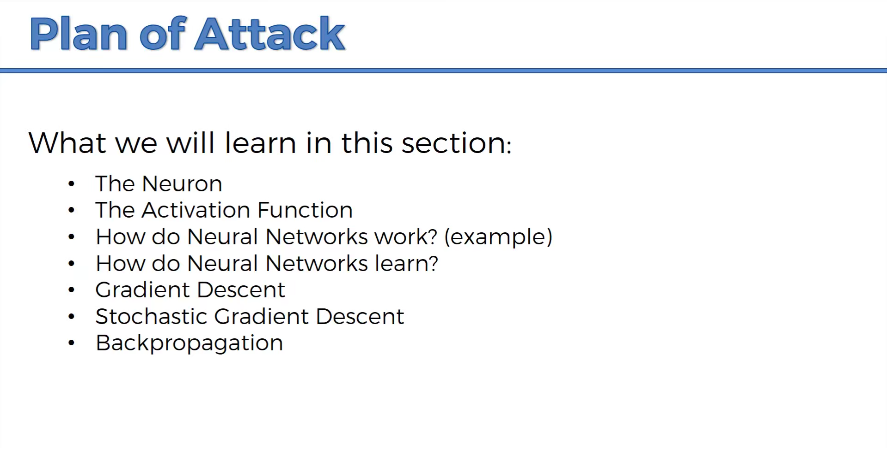
003 The Neuron
 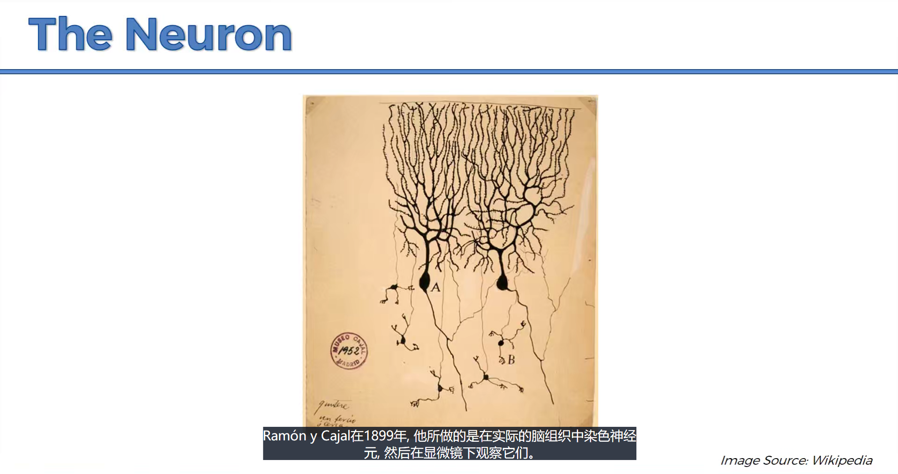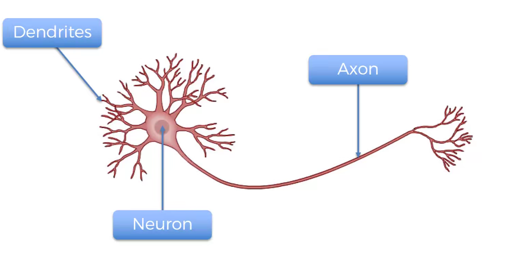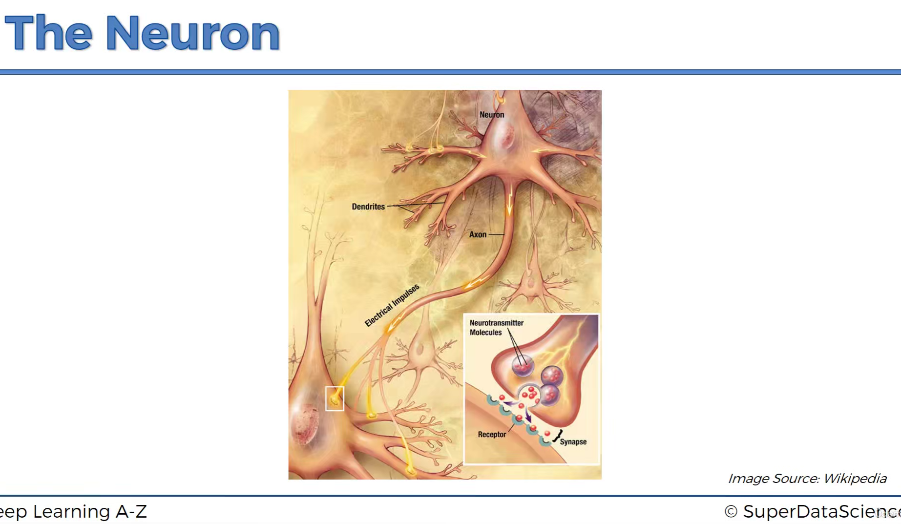
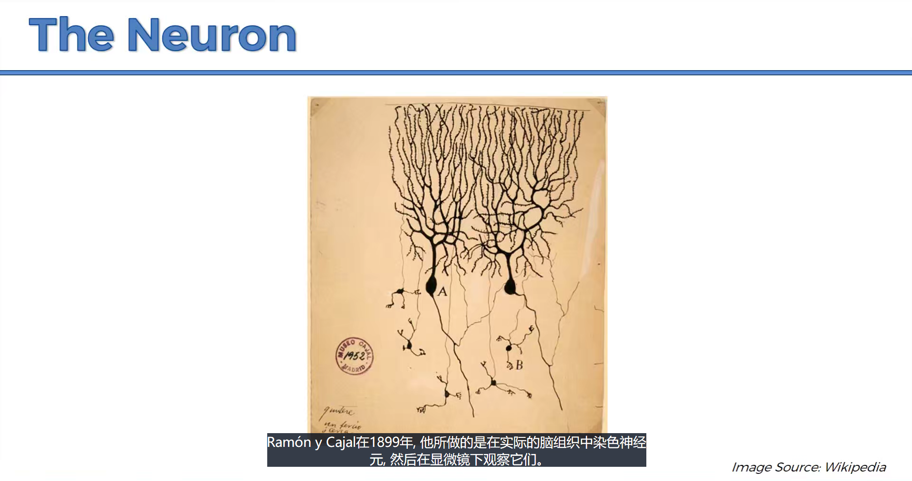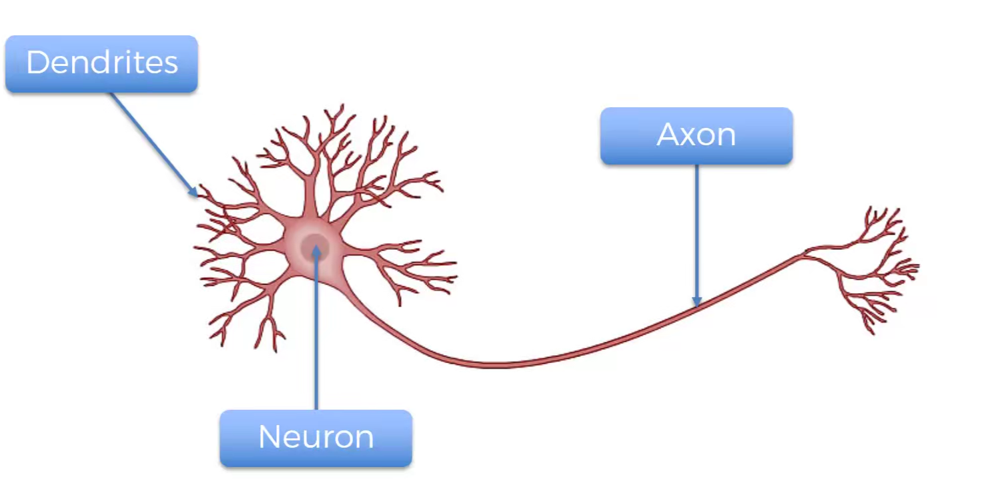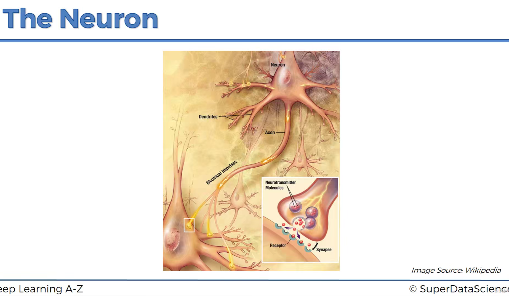
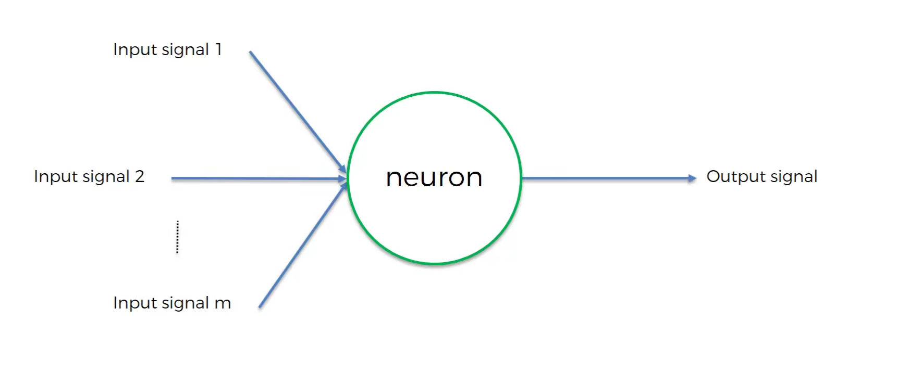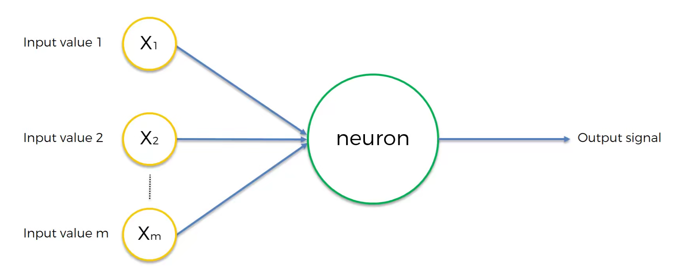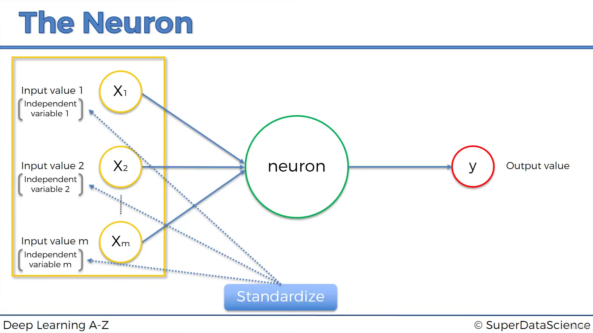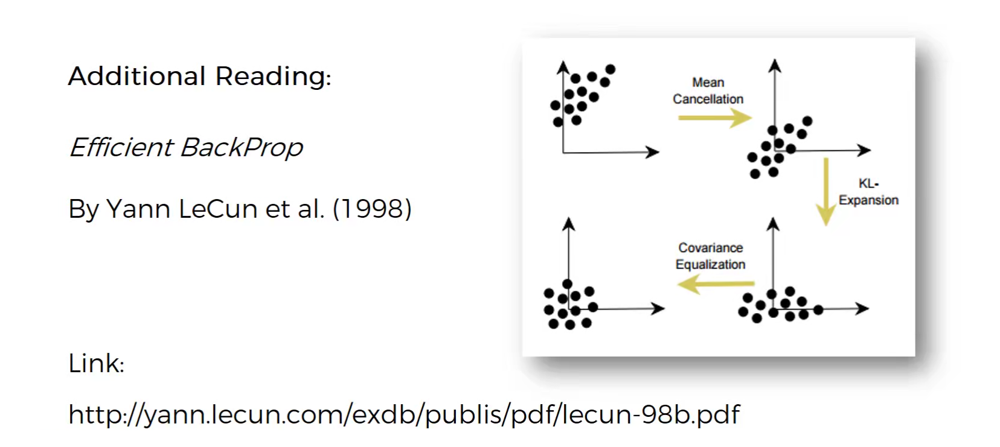
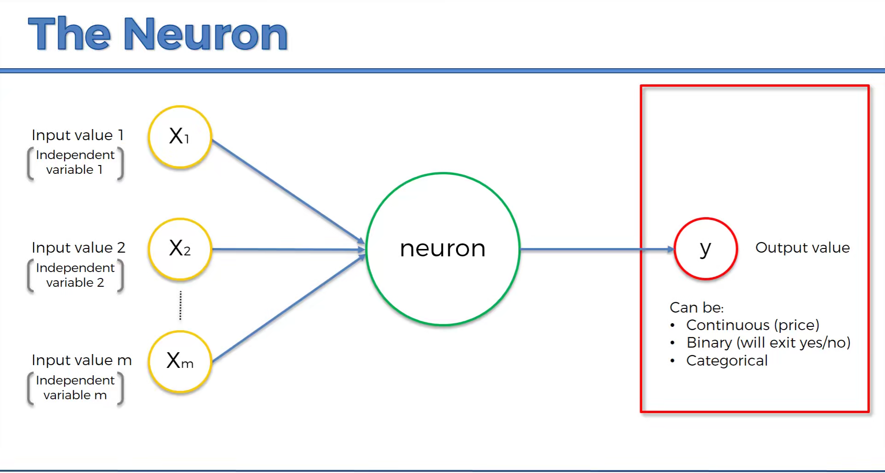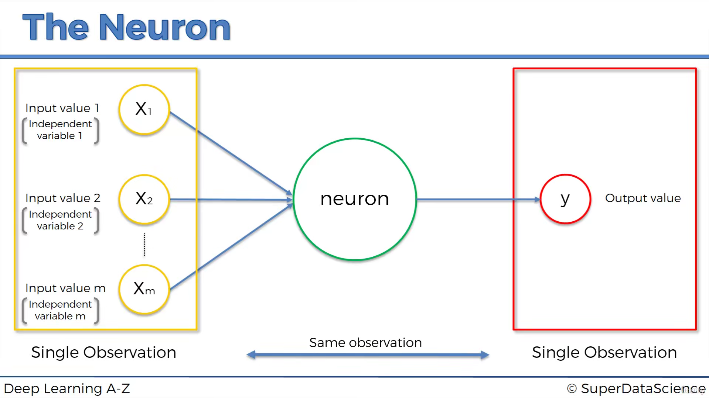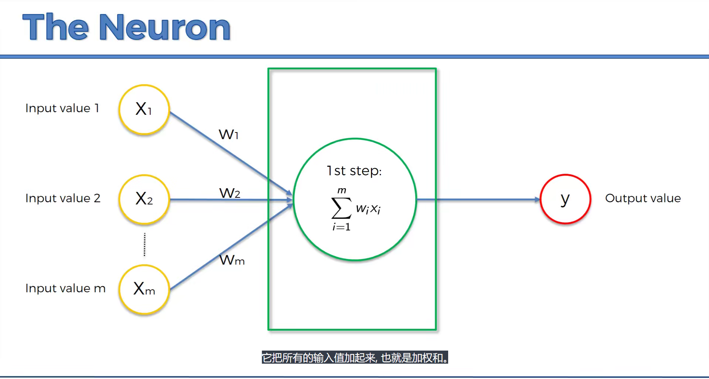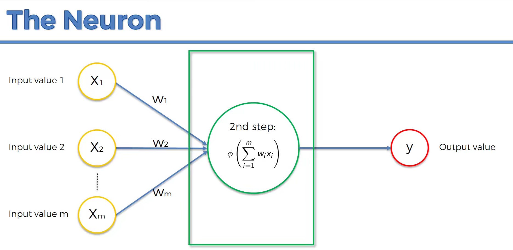
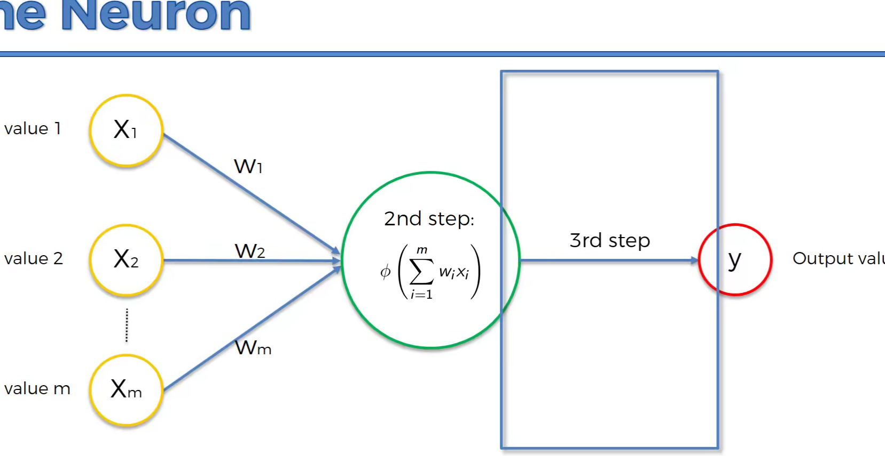
04 - Building an ANN
001 Business Problem Description
数据集 (记录某虚构银行的客户的各项指标, target为是否离开了该银行)
003 Building an ANN
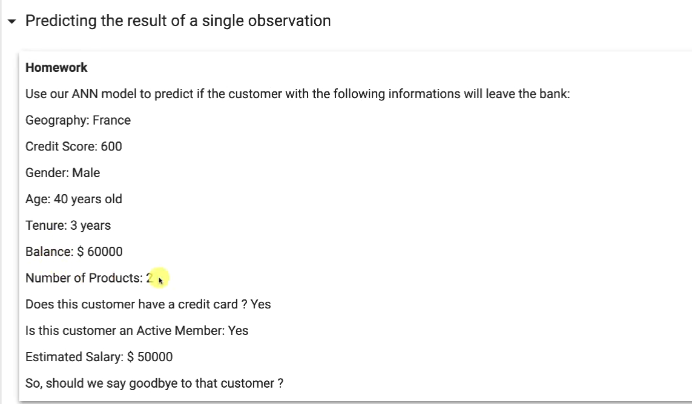
# %% part1
import numpy as np
import pandas as pd
import tensorflow as tf
print(tf.__version__) # 视频: '2.2.0'
# dataset
dataset = pd.read_csv('Churn_Modelling.csv')
X = dataset.iloc[:, 3:-1].values # 所有行, 除了最后一列和前3列的所有列
y = dataset.iloc[:, -1].values # 所有行, 最后一列
# encoding categorical data
# (gender数据从[female,male]转为[0,1])
from sklearn.preprocessing import LabelEncoder
le = LabelEncoder()
X[:, 2] = le.fit_transform(X[:, 2])
print(X)
# (geography从[france,spain...]转为one-hot[[0,0,1...],[1,0,0...],...])
from sklearn.compose import ColumnTransformer
from sklearn.preprocessing import OneHotEncoder
ct = ColumnTransformer(
# 对输入数据索引为1的列进行编码 - onehot
transformers=[('encoder', OneHotEncoder(), [1])],
remainder='passthrough'
)
X = np.array(ct.fit_transform(X))
print(X)
# split train & test dataset
from sklearn.model_selection import train_test_split
X_train, X_test, y_train, y_test = train_test_split(X, y, test_size=0.2, random_state=0)
# feature scaling 特征缩放 - 将不同特征的值量化到同一区间的方法。(归一化?)
from sklearn.preprocessing import StandardScaler
sc = StandardScaler()
# fit_transform是fit和transform的组合，既包括了训练又包含了转换。
X_train = sc.fit_transform(X_train)
# 在Fit的基础上，进行标准化，降维，归一化等操作（看具体用的是哪个工具，如PCA，StandardScaler等）。
X_test = sc.transform(X_test)
# %% part2 - build the ANN
ann = tf.keras.models.Sequential()
'''
tf.keras.layers.Dense(
units, # 正整数，输出空间的维数
activation=None, # 激活函数，不指定则没有
use_bias=True, # 布尔值，是否使用偏移向量
kernel_initializer='glorot_uniform', # 核权重矩阵的初始值设定项
bias_initializer='zeros', # 偏差向量的初始值设定项
kernel_regularizer=None, # 正则化函数应用于核权矩阵
bias_regularizer=None, # 应用于偏差向量的正则化函数
activity_regularizer=None, # Regularizer function applied to the output of the layer (its "activation")
kernel_constraint=None, # Constraint function applied to the kernel weights matrix.
bias_constraint=None, **kwargs # Constraint function applied to the bias vector
)
'''
# 全连接层
ann.add(
tf.keras.layers.Dense(units=6, activation='relu')
)
# 隐藏层
ann.add(
tf.keras.layers.Dense(units=6, activation='relu')
)
# 输出层
ann.add(
tf.keras.layers.Dense(units=1, activation='sigmoid')
)
# %% part3 - train ANN
ann.compile(
optimizer='adam', # 优化器
loss='binary_crossentropy', # 损失函数
metrics=['accuracy'] # 评估指标
)
ann.fit(X_train, y_train, batch_size=32, epochs=100)
# %% predicting
print(
ann.predict([
# geography, credit score, gender, age, tenure, balance, number of products, have a card?, active? estimated salary
sc.transform([1, 0, 0, 600, 1, 40, 3, 60000, 2, 1, 1, 50000])
])
)
y_pred = ann.predict(X_test)
y_pred = (y_pred > 0.5)
print(
np.concatenate(
y_pred.reshape(len(y_pred), 1),
y_test.reshape(len(y_pred), 1),
1
)
)
# %% 混淆矩阵 主要用于比较分类结果和实际测得值，可以把分类结果的精度显示在一个混淆矩阵里面
from sklearn.metrics import confusion_matrix, accuracy_score
cm = confusion_matrix(y_test, y_pred)
print(cm)
'''
[[真阳, 假阴]
[假阳, 真阴]]
'''
print(accuracy_score(y_test, y_pred))
05 - ——————– Part 2 - Convolutional Neural Networks ——————–
07 - Building a CNN
# %% import
import tensorflow as tf
import keras
from keras.preprocessing.image import ImageDataGenerator
# tf 2.2.0 tk 2.3.1
print(tf.__version__, keras.__version__)
# %% part1 data preprocessing
train_datagen = ImageDataGenerator( # 图像增强器
rescale=1. / 255, # 将像素0~255归一化到0~1
# 下面是图像增强部分
shear_range=0.2,
zoom_range=0.2,
horizontal_flip=True
)
train_set = train_datagen.flow_from_directory( # 从图像集选图并增强
'dataset/training_set',
target_size=(64, 64),
batch_size=32,
class_mode='binary' # 二分类
)
# 对测试set进行特征缩放
test_datagen = ImageDataGenerator( # 图像增强器
rescale=1. / 255 # 和训练集的缩放保持一致
)
test_set = validation_generator = test_datagen.flow_from_directory(
'dataset/test_set',
target_size=(64, 64),
batch_size=32,
class_mode='binary' # 二分类
)
# %% part2 building the CNN
cnn = tf.keras.models.Sequential()
cnn.add(tf.keras.layers.Conv2D(
filters=32, # 滤波器个数
kernel_size=3,
activation='relu',
input_shape=[64, 64, 3]
))
# 最大值池化(从指定矩阵窗口中选择最大的作为输出)
# 池化器大小 2x2, 步幅 2
cnn.add(tf.keras.layers.MaxPool2D(pool_size=2, strides=2))
cnn.add(tf.keras.layers.Conv2D(
filters=32, # 滤波器个数
kernel_size=3,
activation='relu',
))
# 最大值池化(从指定矩阵窗口中选择最大的作为输出)
# 池化器大小 2x2, 步幅 2
cnn.add(tf.keras.layers.MaxPool2D(pool_size=2, strides=2))
# flattening 展平
cnn.add(tf.keras.layers.Flatten())
# 全连接层
cnn.add(
tf.keras.layers.Dense(units=128, activation='relu')
)
# 输出层
cnn.add(
tf.keras.layers.Dense(units=1, activation='sigmoid')
)
# %% part3 training the CNN
cnn.compile(
optimizer='adam', # 优化器
loss='binary_crossentropy', # 损失函数
metrics=['accuracy'] # 评估指标
)
cnn.fit(x=train_set, validation_data=test_set, epochs=25)
# %% part4 making a single prediction
import numpy as np
from keras.preprocessing import image
test_image = image.load_img('dataset/single_prediction/cat_or_dog_1.jpg', target_size=(64, 64))
test_image = image.img_to_array(test_image) # 转为numpy数组
# 添加额外的batch维度
test_image = np.expand_dims(test_image, axis=0)
result = cnn.predict(test_image)
print(train_set.class_indices) # 索引和类的对应关系
if result[0][0] == 1:
prediction = 'dog'
else:
prediction = 'cat'
print(prediction)
08 - ———————- Part 3 - Recurrent Neural Networks ———————-
09 - RNN Intuition
002 Plan of attack
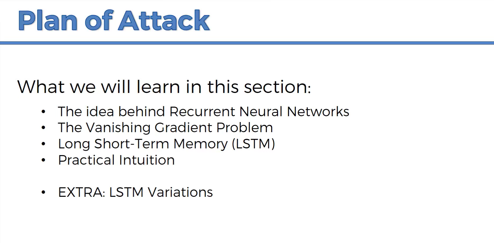
003 The idea behind Recurrent Neural Networks


- 权重是神经网络的长期记忆 - 颞叶 like ANN
- 识别图像 - 枕叶 like CNN
- 短期记忆 - 额叶 like RNN


004 The Vanishing Gradient Problem